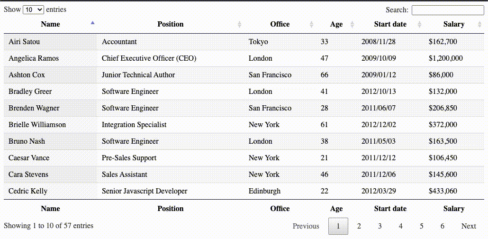

18 JS jQuery/Datatables
19 Using DataTables
For this lesson, you’re going to use the DataTables jQuery plug-in to take an HTML table and make it interactive. The HTML page below has a table on it that you can use as a starting point.
jQuery is a framework that makes it easier to use JavaScript. It’s particularly useful for simply traversing the DOM in an HTML page. Because of this, there are a number of tools and plug-ins written in jQuery.
The purpose of this exercise is to show that you can use many of the tools quickly with just a little JavaScript knowledge.
19.1 Let’s talk about tables
Before we jump into this, take some time to look at HTML Tables tutorial to learn about the HTML tags that make a table. Like other elements we have dealt with there is an HTML structure that is the skeleton of the table, and then the display of that element can be enhanced using CSS.
Tables are great for displaying tabular data (hence the word table). But often those tables can get really long, and we can help make them more useful to readers by adding JavaScript to make them sortable and filterable, sort of like a spreadsheet.
19.2 Goals of this lesson
- Add the required DataTables files to an HTML page (there’s a CSS file and a JavaScript file, which we’ll handle in the first problem below.)
- Call DataTables on your table using the example JavaScript provided on the DataTables website.
It will look similar to this:

19.3 The steps
The steps below will walk you through using the DataTables plug-in to make an interactive table. If at any point you get an error in your Console, stop before moving on to the next step. Each step is dependent on the step before.
19.3.1 v1: “Zero configuration”
- Create a new file in your javascript-practice project folder called
datatable.htmland add the basic HTML5 boilerplate using Emmet. - Go to the DataTables home page and click the link for “Examples”.
- On the Examples page, choose the “Zero configuration” example under “Basic initialisation”.
- On the page with the example you’ll see tabs below the table for “JavaScript”, “HTML” and “CSS” with the code you need. However, there are some assumptions in the instructions, so listen up:
- Start with the HTML tab and copy the code in the box. Take the contents of that box and put it in your
datatable.htmlHTML page between the<body>tags. Save the file and go look at your page in a browser, so you will see how it changes. - Go back to the JavaScript tab on the DataTables site. The contents of that box should go inside a
<script></script>tag at the bottom of yourdatatable.htmlHTML page before the close of the</body>tag.
- Start with the HTML tab and copy the code in the box. Take the contents of that box and put it in your
The parts of this exercise to add the Datatables JavaScript and CSS files assumes some knowledge and is not explained well in the directions. Do this instead:
- Copy the three links below and add them to the bottom of your
<head>tag just before the closing</head>.
<script src="https://code.jquery.com/jquery-3.7.0.js"></script>
<script src="https://cdn.datatables.net/1.13.5/js/jquery.dataTables.min.js"></script>
<link rel="stylesheet" href="https://cdn.datatables.net/1.13.5/css/jquery.dataTables.min.css">- Save your page and look at it in your browser. You should have a working table.
19.3.2 Recap of how this works
- In our
<head>tag we have links to the JQuery JavaScript plugin, the Datatables-specific Javascript files and the Datatables CSS to make it look pretty. - In the
<body>tag you have your HTML table. - At the bottom you have a
<script>tag that tells the page to apply the Datatables javascript to our specific table (based on theidof the table.)
19.3.3 v2: “Scroll Vertical”
- Create a copy of the HTML file you created above and call it
scrolling.html. - Go to the “Scroll Vertical” example. Replace your JavaScript in your tags in the new HTML file you just created (scrolling.html) with the JavaScript on the “Scroll Vertical” example page.
- You should now have a table that isn’t paginated and instead can be scrolled through, just like the example on the DataTables website.
19.4 Commit to Github and turn in
That is our last JavaScript lesson!
- Commit the new files to your repository and push everything to Github.
- Post the link to your repository to the Canvas assignment.